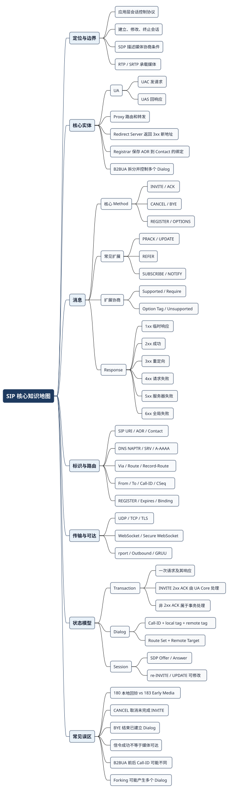
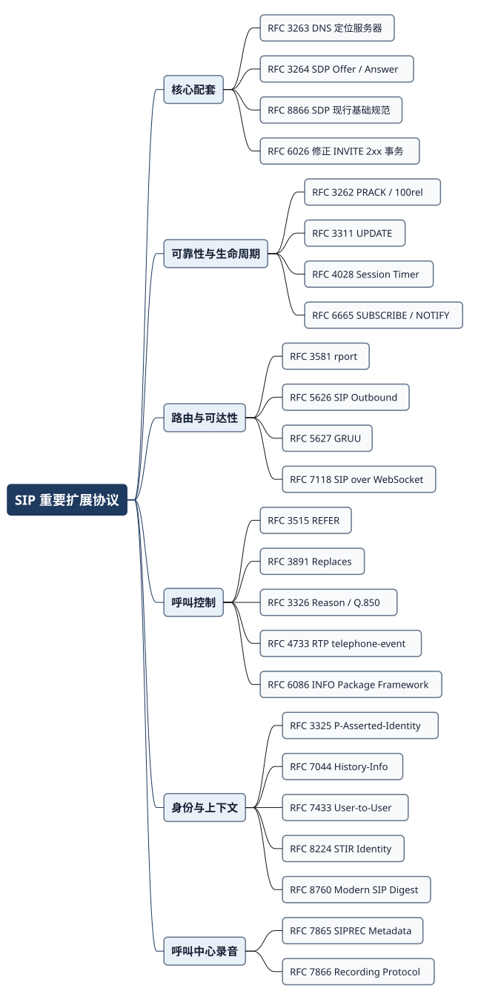
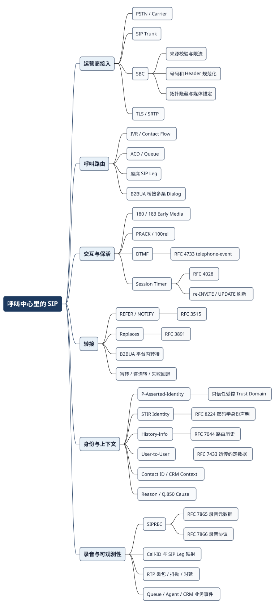

SIP 协议回顾：从一通电话到呼叫中心
Posted on 六 29 8月 2026 in Tech
| Abstract | SIP 协议回顾：从一通电话到呼叫中心 |
|---|---|
| Authors | Walter Fan |
| Category | Tech / learning note |
| Version | v1.0 |
| Updated | 2026-08-30 |
| License | CC-BY-NC-ND 4.0 |
客户拨通银行客服电话，先听到欢迎词，按键验证身份，排队两分钟，接通座席，又被转给信用卡专员。屏幕上自动弹出客户资料，通话全程录音，挂断后还有质检和报表。
对客户来说，这是一通电话。对系统来说，它可能经过运营商、SIP Trunk、SBC、IVR、媒体服务器、ACD、座席终端、录音平台和 CRM，中间还建立了不止一条 SIP Dialog。哪怕声音听起来一路没断，后台的 Call-ID 也可能早已换了几次。
这正是 SIP 容易被误解的地方：它负责建立、修改和结束会话，却不负责排队策略、客户身份、工单流转，也不直接搬运声音。SIP 是呼叫中心的通信骨架，不是呼叫中心的全部。这篇文章先复习骨架，再看业务系统如何把血肉长上去。
本文以 VoIPmonitor 的 Understanding the SIP Protocol 为复习入口，并用 IETF RFC 核对协议细节。呼叫中心案例是按常见信令问题整理的教学场景，不对应某个真实客户事故。
我以前啃 SIP 时，还用 FreeMind 分别画过 Overview、Messages、Terminology、Transaction、REFER 和 Event Notification。现在回头看，这种拆开记笔记的方式并没有过时，只是 .mm 文件不太适合直接放进网页。本文把那些旧节点重新核对、合并成三张 PlantUML 思维导图：一张复习 SIP 核心，一张梳理重要扩展，一张展开呼叫中心应用。
这篇比较长，可以按需要选路线：
| 你想解决什么 | 建议阅读 |
|---|---|
| 十分钟恢复主干记忆 | SIP 核心地图、Transaction/Dialog/Session、扩展协议地图 |
| 重新做 SIP 开发或排障 | 从寻址注册开始，读到 Offer/Answer 与重要扩展 |
| 做呼叫中心、SIP Trunk 或 SBC 互通 | 先看重要扩展，再看呼叫中心架构、案例和检查清单 |
先把边界划清：SIP 管什么，不管什么
RFC 3261 对 SIP 的定位很克制：它是应用层控制协议，用于创建、修改和终止多媒体会话。一次 VoIP 呼叫通常至少涉及三类协议：
| 协议 | 负责什么 | 不负责什么 |
|---|---|---|
| SIP | 找人、发起呼叫、路由、响铃、接听、修改和挂断 | 不直接传输语音 |
| SDP | 描述媒体地址、端口、Codec、方向等协商条件 | 自己不发送媒体，也不保证双方一定谈得拢 |
| RTP / SRTP | 传输语音或视频；SRTP 增加机密性、完整性和重放保护 | 不决定呼叫该转给谁 |
可以把它们想成约饭：SIP 负责联系、确认和取消，SDP 负责商量地点与接头方式，RTP 才是坐下来真正吃饭。呼叫中心还要多一位大堂经理——ACD 负责判断客人排哪队、由谁接待。这已经是业务逻辑，不是 SIP 本身。
SIP 的几个核心角色也值得重新对齐：
| 角色 | 职责 | 在呼叫中心里的常见形态 |
|---|---|---|
| User Agent（UA） | 发送请求时是 UAC，响应请求时是 UAS；角色会随事务变化 | 软电话、IP Phone、浏览器座席、媒体服务器 |
| Proxy | 转发和路由请求，可保持事务状态，也可无状态转发 | SIP 路由层、边缘代理 |
| Redirect Server | 不代转请求，而是用 3xx 告诉请求方去联系新的地址 | 号码迁移、服务重定向 |
| Registrar | 接收 REGISTER，把用户地址映射到当前 Contact |
座席终端注册服务 |
| B2BUA | 面向上游像 UAS，面向下游像 UAC，终止一条 Dialog 再建立另一条 | IP-PBX、SBC、呼叫控制器、CCaaS 语音平台 |
Proxy 更像转发快递，B2BUA 则像拆包、登记、重新包装再发出去。后者掌握完整呼叫状态，也能改写信令、锚定媒体和隐藏内部拓扑。因此，呼叫中心里的排队、转接、录音和容灾，大多绕不开 B2BUA。
SIP 如何找到一个人：URI、DNS 与 REGISTER
SIP 的寻址模型里，最重要的一组概念是 AOR 与 Contact。
- AOR（Address-of-Record）是长期公开地址，例如
sip:alice@example.com，类似一个人的公司邮箱。 - Contact 是某个 UA 实例此刻可以接收请求的地址，例如
sip:alice@192.0.2.10:5060;transport=tcp。 - Registrar 接收
REGISTER，把 AOR 与一个或多个 Contact 绑定；Location Service 保存这些绑定，Proxy 再用它决定请求发到哪里。
同一个 AOR 可以注册手机、桌面电话和软终端多个 Contact。来电时 Proxy 可以顺序尝试，也可以 Fork 到多个终端。注册解决的是“现在去哪找你”，不是“你这条媒体一定可用”。REGISTER 200 OK 不能代替端到端呼叫探测。
一次带鉴权的注册
sequenceDiagram
participant U as UA
participant R as Registrar
participant L as Location Service
U->>R: REGISTER Contact + Expires
R-->>U: 401 Unauthorized + WWW-Authenticate
U->>R: REGISTER + Authorization
R->>L: 写入 AOR → Contact 绑定
R-->>U: 200 OK + 当前绑定
Note over U,R: 到期前刷新；Expires=0 删除绑定
这里的 401 是挑战，不是登录失败。Proxy 发起挑战时通常使用 407 Proxy Authentication Required 与 Proxy-Authenticate。传统 SIP Digest 来自 RFC 3261 引用的旧 HTTP Digest；RFC 8760 后来为 SIP 增加 SHA-256、SHA-512/256 和 qop 等现代能力，MD5 只为兼容保留，已经不推荐使用。
从域名找到下一跳
RFC 3263 规定 SIP 如何用 DNS 找服务，典型思路是：
SIP URI → NAPTR 选择服务与传输 → SRV 选择主机、端口和优先级 → A/AAAA 得到地址
如果 URI 已明确传输、端口或主机，解析过程会相应缩短。企业 SIP Trunk 常直接配置运营商 SBC 地址，但 DNS 的优先级、权重、TTL 与失败切换仍值得测试；“主域名能解析”不代表备用目标真的接得住流量。
传输层不是只有 UDP 5060
| 传输 | 特点 | 常见注意事项 |
|---|---|---|
| UDP | 无连接、消息边界天然保留，SIP 事务层负责重传 | 大消息分片、NAT 映射和重传风暴 |
| TCP | 可靠、有连接，适合较大消息 | 要正确处理连接复用、断线和消息边界 |
| TLS over TCP | 在相邻 SIP Hop 之间保护信令 | 证书、域名校验和 Trust Domain；不自动等于端到端加密 |
| WebSocket / Secure WebSocket | RFC 7118 让浏览器等客户端承载 SIP | 媒体仍不在 WebSocket SIP 规范范围内 |
5060 和 5061 是最常见的 SIP 与 SIP/TLS 端口，却不是判断协议的唯一依据。抓包时要看实际传输、Via 和连接方向，不能只按端口过滤。
一通最基本的 SIP 电话怎样建立
下面是最常见的 Offer/Answer 呼叫。为了突出主线，先省略鉴权、分叉、PRACK 和重传。
sequenceDiagram
participant C as Caller / UAC
participant P as Proxy 或 B2BUA
participant A as Callee / UAS
C->>P: INVITE + SDP Offer
P->>A: INVITE + SDP Offer
P-->>C: 100 Trying
A-->>P: 180 Ringing 或 183 Session Progress
P-->>C: 180 或 183
A-->>P: 200 OK + SDP Answer
P-->>C: 200 OK + SDP Answer
C->>P: ACK
P->>A: ACK
C->>A: RTP / SRTP 上行媒体
A->>C: RTP / SRTP 下行媒体
C->>P: BYE
P->>A: BYE
A-->>P: 200 OK
P-->>C: 200 OK
这张图看似简单，里面有几个经常混淆的点：
INVITE发起会话，ACK确认对INVITE的最终成功响应；200 OK到了并不等于媒体一定可达。CANCEL取消尚未完成的INVITE，只在最终响应之前有效；会话已经建立，就应该用BYE结束。180 Ringing通常表示被叫正在振铃，主叫端可以生成本地回铃音；183 Session Progress常配合 SDP 和 Early Media，由网络传回彩铃、排队提示或错误公告。- SIP 信令走通与 RTP 媒体走通是两回事，所以“能接通但单通”并不矛盾。
图里把 RTP 画成端到端直达，是为了说明信令与媒体分离。实际部署中，媒体可能直达，也可能经过 SBC、媒体服务器或转码节点。
Method 是动词，Response Code 是结果
SIP 消息分成 Request 和 Response。核心 Method 不多，呼叫中心常见的扩展却不少：
| Method | 用途 | 排障提示 |
|---|---|---|
INVITE |
建立 Dialog 和会话，也可在 Dialog 内重新协商媒体 | re-INVITE 不是第二通电话 |
ACK |
确认 INVITE 的最终响应 |
对 2xx 与非 2xx 的事务处理并不完全相同 |
BYE |
结束已建立的 Dialog | 谁都可以先挂断，不要默认 BYE 一定来自主叫 |
CANCEL |
取消尚未完成的 INVITE |
随后看到 487 Request Terminated 往往是结果，不是根因 |
REGISTER |
把用户的 AOR 绑定到当前 Contact | 过期或刷新失败会让座席“在线但打不进来” |
OPTIONS |
查询能力，也常被设备用作健康检查 | 200 OK 只能证明 SIP 可响应，不能证明业务和媒体都健康 |
PRACK |
确认可可靠传输的临时响应 | 常与 100rel 和 Early Media 一起出现 |
UPDATE |
在 Early Dialog 或已建立 Dialog 中更新会话参数 | 要与 re-INVITE 的使用边界对齐 |
REFER |
请求接收方联系第三方 | 常用于转接，结果通过 NOTIFY 报告 |
SUBSCRIBE / NOTIFY |
订阅并通知事件状态 | 除 Presence 外，REFER 结果通知也会用到这套机制 |
INFO |
在已建立的 INVITE Dialog 中传递应用层信息 | 不能替代 Offer/Answer；内容语义必须事先约定 |
MESSAGE |
发送 Pager Mode 即时消息 | 它不是语音呼叫里的通用数据通道 |
响应码沿用了大家熟悉的分组方式，但不能把所有 4xx 都理解成“客户发错了”：
| 类别 | 含义 | 常见例子 |
|---|---|---|
| 1xx | 临时响应，事务仍在进行 | 100 Trying、180 Ringing、183 Session Progress |
| 2xx | 请求成功 | 200 OK、202 Accepted |
| 3xx | 重定向 | 301 Moved Permanently、302 Moved Temporarily |
| 4xx | 本次请求在当前节点无法完成 | 401/407 鉴权挑战、404 未找到、486 忙、488 媒体不兼容 |
| 5xx | 服务器或上游处理失败 | 500 Server Internal Error、503 Service Unavailable |
| 6xx | 全局失败 | 603 Decline、604 Does Not Exist Anywhere |
1xx 只是进度，2xx 到 6xx 才是最终响应。尤其别看到 401 Unauthorized 就报警：Digest Authentication 的正常流程本来就可能先挑战，再由客户端带凭据重试。真正可疑的是挑战循环、Realm 不一致或重试后仍失败。
下面这些响应码在开发和排障中出现得最频繁，值得恢复到“看见就知道下一步查什么”的程度：
| 响应码 | 通常表示什么 | 下一步重点 |
|---|---|---|
100 Trying |
下一跳已经接手处理 | 它不代表被叫正在振铃，也不需要 PRACK |
180 Ringing |
被叫正在振铃 | 通常由主叫侧生成本地回铃音 |
183 Session Progress |
呼叫仍在推进，常携带 Early Media SDP | 检查 SDP、PRACK/100rel 与 RTP 首包 |
200 OK |
当前请求成功 | 对 INVITE 还要确认 ACK 与媒体；对 REGISTER 要检查返回绑定 |
401 / 407 |
UAS 或 Proxy 发出鉴权挑战 | 比较 Realm、Nonce、算法、qop 与重试后的 Authorization |
420 Bad Extension |
对端不理解 Require 中的扩展 | 查看 Unsupported，调整 Option Tag 或互通 Profile |
422 Session Interval Too Small |
Session Timer 间隔低于对端下限 | 按 Min-SE 提高 Session-Expires 后重试 |
423 Interval Too Brief |
REGISTER 等请求的过期时间太短 | 按 Min-Expires 调整注册周期 |
480 Temporarily Unavailable |
当前暂时无法联系用户 | 查注册、路由、终端状态和失败分支 |
481 Call/Transaction Does Not Exist |
对端找不到目标 Dialog 或 Transaction | 查 Call-ID、tag、CSeq、Route Set 以及是否发错了 Call Leg |
486 Busy Here |
当前目标忙 | 区分真实终端忙、ACD 容量策略与网关映射 |
487 Request Terminated |
INVITE 通常被 CANCEL 终止 | 往前找是谁、为什么发送 CANCEL |
488 Not Acceptable Here |
当前资源无法接受本次会话描述 | 对比 Codec、SRTP、媒体方向和 SDP 属性 |
491 Request Pending |
同一 Dialog 上存在尚未完成的 INVITE | 典型是 Offer Glare，按规范退避后重试 |
500 / 503 |
节点内部失败或暂时不可用 | 查看 Retry-After、上游状态、容量与故障切换 |
SIP 扩展不是靠版本号一次性升级，而是通过 Method、Header、MIME Body 和 Option Tag 逐项协商：
| Header | 含义 |
|---|---|
Supported: 100rel, timer |
“我理解这些扩展，你可以用” |
Require: 100rel |
“要处理本请求，UAS 必须支持它” |
Proxy-Require |
要求路径中的 Proxy 支持某项扩展，使用要格外谨慎 |
Unsupported |
在 420 Bad Extension 中说明不支持哪些 Option Tag |
这套机制解释了为什么同样是 183，有的后面必须跟 PRACK，有的不用；也解释了 Session Timer 为什么有时出现、有时完全没有。排障时，别只搜 Method，还要看 Supported、Require 和 Option Tag 是否在经过 SBC 后被保留下来。
从 FreeMind 旧笔记整理出的 SIP 核心地图
这张图保留了旧笔记中“协议定位—实体—消息—术语—状态机”的骨架，同时补上 SDP/RTP 的边界、较新的常用扩展和几个排障时最容易混淆的点。

Transaction、Dialog 和 Session 不是一回事
这三个词是 SIP 排障的地基：
| 概念 | 看什么 | 典型标识与生命周期 |
|---|---|---|
| Transaction | 一次请求及其响应，例如一次 INVITE 或 BYE |
主要靠 Via branch、CSeq 和 Method 匹配，通常很短 |
| Dialog | 两个 UA 之间持续一段时间的信令关系 | Call-ID + local tag + remote tag，从建立到结束 |
| Session | 双方协商出来的媒体会话 | 由 SDP Offer/Answer 描述，可在 Dialog 内用 re-INVITE 或 UPDATE 修改 |
一个常见误区是把 Call-ID 当作整个客户旅程的唯一编号。它只在一条 SIP Dialog 的语境里有意义。呼叫经过 B2BUA、排队再接座席时，上下游常常是不同 Dialog，也可能使用不同 Call-ID。只拿一个 Call-ID 去搜全链路，搜不到并不代表呼叫凭空消失了。
INVITE 事务为什么特殊
SIP 为 INVITE 和非 INVITE 定义了不同事务状态机。名称不必死背，至少要记住这些差异：
| 场景 | 关键行为 |
|---|---|
| UDP 上发送请求 | 事务层按定时器重传；TCP/TLS/WebSocket 不做同样的 SIP 层重传 |
| INVITE 收到 3xx–6xx | ACK 属于 INVITE 事务处理的一部分，逐跳沿原事务路径返回 |
| INVITE 收到 2xx | ACK 由 UA Core 端到端生成，不属于原 INVITE 事务；2xx 会重传直到收到 ACK |
| Forking 返回多个 2xx | 每个 2xx 都可能建立一个 Dialog，UAC 必须分别 ACK，再按策略保留或 BYE 多余分支 |
| 非 INVITE 请求 | 使用 Trying、Proceeding、Completed、Terminated 这一类较简单状态 |
RFC 6026 后来修正了 RFC 3261 对 INVITE 2xx 的事务处理，增加 Accepted 状态以正确吸收重传。实现 SIP Stack 时需要遵循更新后的状态机；做业务排障时，至少要知道“ACK 到底由事务层还是 UA Core 负责”会影响重传、路由和日志位置。
定时器也不用背成乘法口诀。记住 T1 是网络 RTT 的估计基准，A/E 控制不可靠传输上的重传，B/F 控制事务超时；看到固定节奏的 INVITE、BYE 或 OPTIONS 重复包，先判断它是协议重传，还是业务层真的发起了第二次请求。
Dialog 保存了哪些状态
Dialog 由 Call-ID + local tag + remote tag 标识，还保存两类经常被忽略的数据：
- Route Set 来自建立 Dialog 时的
Record-Route，决定后续 BYE、re-INVITE、INFO 等请求经过哪些 Proxy。 - Remote Target 通常来自对端 Contact，决定下一个 Dialog 内请求最终送往哪个 UA；收到 Target Refresh Request 后可能更新。
- Local/Remote CSeq 保证各方向请求有序，防止旧请求覆盖新状态。
- Secure 标志与本地/远端 URI 记录 Dialog 的身份和安全属性。
Dialog 可以是 Early、Confirmed，最后 Terminated。一个 Forked INVITE 可以同时产生多个 Early Dialog；如果多个分支都返回 2xx，还会形成多个 Confirmed Dialog。B2BUA 通常把这种复杂度挡在平台内部，但抓端到端信令时不能假设“一次 INVITE 永远只有一个 To-tag”。
读懂一条 INVITE，先抓住这些字段
下面是一条缩减后的示例消息，地址使用文档保留网段：
INVITE sip:service@example.com SIP/2.0
Via: SIP/2.0/UDP 192.0.2.10:5060;branch=z9hG4bK-1234
Max-Forwards: 70
From: "Alice" <sip:alice@example.net>;tag=from-5678
To: <sip:service@example.com>
Call-ID: call-9abc@example.net
CSeq: 101 INVITE
Contact: <sip:alice@192.0.2.10:5060>
Content-Type: application/sdp
Content-Length: 164
v=0
o=alice 2890844526 2890844526 IN IP4 192.0.2.10
s=-
c=IN IP4 192.0.2.10
t=0 0
m=audio 49172 RTP/AVP 0 101
a=rtpmap:0 PCMU/8000
a=rtpmap:101 telephone-event/8000
a=fmtp:101 0-16
a=sendrecv
SIP 消息的结构固定为：Start Line、若干 Header、一个空行、可选 Body。Request Line 是 Method + Request-URI + SIP-Version；Status Line 是 SIP-Version + Status-Code + Reason-Phrase。排障时不用从第一行背到最后一行，先抓这些字段：
| 字段 | 作用 | 常见误区 |
|---|---|---|
| Request-URI | 当前请求目标，每经过 Retargeting 都可能改变 | 它不等于最初拨打号码 |
| Via | 每一跳添加一层，响应按相反方向返回；branch 用于事务匹配 | 不要把最上层 Via 当作最终被叫地址 |
| Record-Route / Route | Proxy 用 Record-Route 要求留在 Dialog 路径；后续请求按 Route Set 发送 | 与一次事务的 Via 路径不是同一个概念 |
| Contact | UA 可直接到达的地址，也是 Dialog 的 Remote Target 来源 | 不一定等于 From，也可能被 Target Refresh 更新 |
| From / To + tag | Dialog 两端身份与 tag | From 是声明，不自动可信；To-tag 可能因 Forking 出现多个 |
| Call-ID | Dialog 标识的一部分 | B2BUA 前后可能改变，不能单独代表完整客户旅程 |
| CSeq | 序号与 Method，维护 Dialog 内请求顺序 | ACK/CANCEL 与 INVITE 的匹配规则需要按规范处理 |
| Max-Forwards | 每一跳递减，防止路由环路 | 到 0 通常返回 483 Too Many Hops |
| Supported / Require | 声明支持或强制使用 Option Tag | SBC 随意删除可能破坏 PRACK、Timer 等协商 |
| Content-Type / Length | 说明 Body 类型与长度 | TCP 上消息边界判断尤其依赖正确长度 |
SDP c= / m= / a= |
媒体地址端口、Payload 和属性 | 语法正确不代表网络可达 |
m=audio ... 0 101 表示本次提议支持两个 Payload Type：静态编号 0 对应 PCMU，动态编号 101 在后面的 a=rtpmap 中被定义为 telephone-event。后者通常承载 IVR 按键；它遵循 RFC 4733，而 RFC 4733 已取代经常被口头提到的 RFC 2833。
SDP 与 Offer/Answer：最像配置文件，也最容易谈崩
SDP 的现行基础规范是 RFC 8866，它取代了 RFC 4566。SDP 只是描述格式；真正规定“你先提议、我再回答”的是 RFC 3264。
一次 Offer/Answer 至少要守住几条规则：
- 同一时刻只能有一个尚未完成的 Offer，不能双方各谈各的。
- Answer 必须保持与 Offer 相同数量和顺序的
m=行；拒绝某一路媒体时把端口设为0，不能直接删掉那一行。 - 动态 Payload Type 要通过
a=rtpmap对齐；Answer 选择的是 Offer 给出的交集，不是另开一份菜单。 a=sendrecv是默认双向，sendonly、recvonly、inactive常用于 Hold、Music on Hold 和媒体暂停。c=地址和m=端口描述媒体目的地。它们语法正确但网络不可达时，SIP 仍可能 200 OK，结果就是单通或无声。
Offer 最常放在 INVITE，Answer 放在 200 OK；也可以 INVITE 不带 Offer，由 200 OK 发 Offer、ACK 回 Answer。可靠临时响应、PRACK 和 UPDATE 又增加了 Early Dialog 中的合法组合。RFC 6337 专门把这些组合收拢成一份实践说明，写 SIP UA 或 B2BUA 时值得放在手边。
re-INVITE、UPDATE 与 Glare
- re-INVITE 可以在 Confirmed Dialog 中修改媒体，也能让对端先发临时响应、留时间给用户决定；完成它需要 INVITE/响应/ACK。
- RFC 3311 的 UPDATE 可在 Early 或 Confirmed Dialog 中更新 Session 参数，不改变 Dialog 状态，消息更少，但要求双方支持。
- 双方几乎同时发送新 Offer 称为 Glare。此时 UPDATE 或 re-INVITE 可能收到
491 Request Pending或特定条件下的500，随后应按规则退避重试，而不是两边立即死循环互撞。
当 Codec、加密套件、媒体方向或地址谈不拢时，常见结果是 488 Not Acceptable Here。但 488 只说“这份 Offer 我不能接受”，根因仍要回到双方 SDP 逐行比较。
重要扩展协议：按问题记，比按编号背省脑子
RFC 3261 是主干，却从来不是整棵树。下面把常见扩展和配套协议按它们解决的问题归类。不是每个系统都要实现全部 RFC，但互通双方必须明确各自支持哪一组、由谁终止或透传。
1. 可靠临时响应：RFC 3262
基础 SIP 不保证 1xx 临时响应可靠送达。RFC 3262 用 100rel Option Tag、RSeq、RAck 和 PRACK 为非 100 的临时响应增加可靠性：
INVITE (Supported/Require: 100rel) → 183 (Require: 100rel, RSeq) → PRACK (RAck) → 200 PRACK
100 Trying 不能使用这套机制。PRACK 是一条正常的 Dialog 内非 INVITE 请求，不是 ACK 的另一种拼法。它在 PSTN 互通、Early Media、计费前置条件和需要可靠 SDP Answer 的场景里很常见。典型故障是 SBC 保留了 183，却删掉 Require: 100rel、RSeq 或 RAck，导致一边等 PRACK，另一边根本不知道要发。
2. 会话更新与保活：RFC 3311、RFC 4028
UPDATE 解决 Early Dialog 中“最终 200 OK 之前就要更新 Session 参数”的需求，也可用于 Confirmed Dialog。Session Timer 则解决有状态设备如何发现“双方进程已经死了，Dialog 却没人收尸”。
RFC 4028 定义：
Session-Expires：当前 Session Interval，以及refresher=uac|uas；Min-SE：可以接受的最小刷新间隔；422 Session Interval Too Small：请求的间隔太短，带新的Min-SE让对端重试；- re-INVITE 或 UPDATE：实际执行刷新。
Session Timer 不是 RTP Keepalive，也不是 NAT Keepalive。它证明的是 SIP Session 仍在被维护，不证明语音包一定双向可达。
3. 事件订阅：RFC 6665
旧笔记里常见的 RFC 3265 已被 RFC 6665 取代。基本模型是：
SUBSCRIBE → 200 → NOTIFY(当前状态) → 200 → ... → NOTIFY(状态变化)
Event 决定订阅哪个 Event Package，Subscription-State 表示 active、pending 或 terminated，订阅也有 Expires，需要刷新。Presence、Message Waiting、Dialog State、Registration State 都建立在这个框架上。SUBSCRIBE 200 OK 表示订阅请求被接受，真正的当前状态由随后立即发送的 NOTIFY 给出。
REFER 历史上还会隐式创建 refer Event Subscription，所以转接不是“发完 REFER 就完事”，还要处理 NOTIFY 中的 message/sipfrag 结果、失败和超时。
4. NAT 与具体设备可达：RFC 3581、5626、5627
NAT 问题至少分成信令响应、持续连接和媒体三层，不能只靠一个参数包治百病：
| 机制 | 解决什么 | 不解决什么 |
|---|---|---|
| RFC 3581 rport | 让响应发回请求实际来源的 IP 与端口 | 不建立长期可用的回程 Flow，也不解决 RTP |
| RFC 5626 SIP Outbound | UA 主动建立并注册持久 Flow，支持 Keepalive、故障检测和多 Flow | 不替代媒体 ICE/STUN/TURN |
| RFC 5627 GRUU | 为某个具体 UA 实例提供全局可路由 URI | 不等于设备永远在线 |
| RFC 7118 WebSocket | 让浏览器或受限客户端通过持久 WebSocket 传 SIP | 只定义信令传输，不承载 RTP 媒体 |
呼叫中心远程座席经常同时碰到这三层：WebSocket 或 Outbound 保住信令，SBC 维护边界策略，WebRTC/ICE 或媒体锚定解决 RTP。把单通归咎于 REGISTER，通常是找错了楼层。
5. 转接与呼叫替换：RFC 3515、3891
- RFC 3515 的
REFER请求接收方联系Refer-To指定的资源，并用 NOTIFY 报告执行结果。 - RFC 3891 的
Replaces让一个新 INVITE 替换由 Call-ID 和 To/From tag 标识的既有 Dialog，常用于咨询转、Call Park 取回和三方转两方。
在点对点 SIP 里，这套机制很漂亮；在呼叫中心里，平台往往更愿意由 B2BUA 控制转接，避免把拓扑、权限、录音和失败恢复交给不同终端各自理解。支持 RFC 不等于必须采用同一种产品架构。
6. 媒体内事件与应用信息：RFC 4733、6086
DTMF 有三种常见传法：
| 方式 | 特点 | 建议 |
|---|---|---|
| In-band | 按键音混在语音 Codec 里 | 经过压缩和转码可能失真，不适合当默认方案 |
| RTP Named Telephone Event | RFC 4733 的 telephone-event，在 SDP 中协商动态 Payload Type |
VoIP/IVR 互通的常见首选 |
| SIP INFO | 在 Dialog 信令路径发应用消息 | 必须确认双方约定的 MIME 与语义，不能看到 INFO 就默认是 DTMF |
RFC 6086 取代 RFC 2976，定义 INFO Method 和 Info Package Framework。它也明确指出历史上的 INFO DTMF 用法是厂商私有实践，并未因此被标准化。INFO 适合低频、已协商的应用信息；拿它搬大量实时数据，会让信令平面替应用层背流量。
7. 身份、原因与路由历史：RFC 3325、3326、7044、7433、8224
这些 Header 都“看起来像上下文”，信任级别却完全不同：
| 机制 | 语义 | 信任边界 |
|---|---|---|
P-Asserted-Identity |
受信任网络断言并传递已认证身份 | RFC 3325 的 Trust Domain 内使用 |
Reason |
携带 SIP Status 或 Q.850 Cause，例如运营商释放原因 | RFC 3326；可能被中间设备改写，不能单独当安全证据 |
History-Info |
保存请求 Retargeting 的历史 | 受节点支持、隐私和裁剪影响，可能有缺口 |
User-to-User |
在约定双方之间携带不透明 UUI 数据 | 需要事先约定编码与用途，不应塞长期敏感数据 |
Identity |
对发起方身份声明做密码学签名与验证 | RFC 8224 的 STIR 架构，仍依赖证书和策略 |
PAI 与 STIR Identity 不是同一回事：前者依赖受控网络的传递信任，后者提供可验证的密码学声明。呼叫中心可以用它们辅助显示主叫信息、反欺诈和路由，但都不能替代客户身份验证。
8. 录音：SIPREC RFC 7865、7866
SIPREC 把客户通话称为 Communication Session，把送往录音平台的会话称为 Recording Session：
这两个 Session 不是一回事。录音可用性也不能只看 SIPREC INVITE 是否 200：媒体是否完整、双声道是否映射正确、暂停恢复是否按策略执行、录音 ID 能否关联 Contact，才是呼叫中心真正关心的结果。
SIP 重要扩展协议地图

如果只想保留一张速查表，可以用下面这组优先级：
| 使用场景 | 建议重点掌握 |
|---|---|
| SIP Core / Stack | RFC 3261、3262、3263、3264、3311、4028、6026、6665 |
| 语音网关与 SIP Trunk | 再加 RFC 3325、3326、3515、3891、4733、6086 |
| 移动端、浏览器、NAT | 再加 RFC 3581、5626、5627、7118 |
| 呼叫中心 | 再加 RFC 7044、7433、7865、7866，以及身份验证相关 RFC 8224、8760 |
如果你和我一样是翻旧 Mindmap 或老代码回来复习，这几组替代关系最值得先更新：
| 旧资料里常见 | 现在应优先看 | 变化 |
|---|---|---|
| RFC 3265 Event Notification | RFC 6665 | RFC 6665 已取代 RFC 3265 |
| RFC 2976 SIP INFO | RFC 6086 | 增加 Info Package Framework，并保留 Legacy INFO 兼容 |
| RFC 2833 DTMF | RFC 4733 | RFC 4733 已取代 RFC 2833 |
| RFC 4566 SDP | RFC 8866 | RFC 8866 是现行 SDP 基础规范 |
| RFC 2617 / MD5 Digest | RFC 8760 + RFC 7616 | SIP 支持 SHA-256、SHA-512/256；MD5 不推荐 |
| RFC 4474 SIP Identity | RFC 8224 | STIR Identity 新规范取代 RFC 4474 |
SIP 进入呼叫中心之后，事情复杂在哪里
普通分机呼叫关心“找到对方并接通”。呼叫中心还要回答：客户从哪个号码进来、要办什么、是否验证过、排哪个队、由谁处理、如何录音、转接后上下文是否还在。
flowchart LR
C[客户 / PSTN] --> T[运营商 / SIP Trunk]
T --> S[SBC]
S --> B[呼叫控制 / B2BUA]
B --> I[IVR / 媒体服务器]
I --> Q[ACD / Queue / Routing]
Q --> B
B --> A[座席终端]
B -. SIPREC .-> R[录音平台]
I -. DTMF / ASR .-> F[Contact Flow]
F <--> D[CRM / 身份 / 订单]
Q <--> D
A <--> D
B -. Call-ID 映射 .-> O[可观测性 / CDR]
R -. Recording ID .-> O
D -. Contact ID .-> O
这套架构里，SIP 仍然负责各段会话，但很多“看起来像电话功能”的能力其实来自扩展协议或平台状态：
| 呼叫中心能力 | 常见 SIP / 媒体机制 | 工程上的关键点 |
|---|---|---|
| 运营商接入 | SIP Trunk、SBC、TLS、SRTP | 号码格式、Codec、Early Media、拓扑隐藏和限流要统一 |
| 主叫身份 | From、P-Asserted-Identity |
PAI 只应在受信任域内使用，不能把外部来值直接当成已验证身份 |
| IVR 按键 | SDP 协商的 RTP telephone-event |
Payload Type、时钟频率和事件范围必须匹配 |
| 排队与提示音 | B2BUA、媒体服务器、Early Media 或已接听媒体 | Queue 是业务状态，不是一个 SIP Method |
| 会话保活 | re-INVITE / UPDATE、Session Timer | 双方要对 Session-Expires 和 refresher 角色有一致理解 |
| 盲转、咨询转 | REFER、Replaces，或平台内部 B2BUA 控制 |
转过去的不只是媒体，还要保住 Contact 上下文和录音关系 |
| 路由历史 | History-Info |
可记录请求被重定向、分叉和改写的历史，但要处理隐私与不完整链路 |
| 业务上下文 | User-to-User、厂商头域，或独立 CTI/API |
UUI 适合透传事先约定的少量不透明数据，不适合塞完整客户资料 |
| 合规录音 | SIPREC + RTP/SRTP + Recording Metadata | 录音会话与客户通话不是同一条 Session，要保存映射和策略 |
把这些扩展落到呼叫中心
单独支持某个 RFC 只是起点，呼叫中心更关心组合行为：
- 转接时，REFER/Replaces 的成功状态能否与原 Contact ID、录音和座席状态一起迁移；
- 多次 Retargeting 后，History-Info、入口号码、原始被叫号码与当前 Queue 是否还能对上；
- UUI 或私有 Header 经过运营商、SBC 和 B2BUA 后是否保留，敏感字段是否在离开 Trust Domain 前清理；
- SIPREC 录音腿失败时，是放行客户通话、阻断通话，还是降级告警，必须有明确业务策略；
- Reason/Q.850、SIP Response 与业务 Disposition 如何映射，避免把“客户取消”“座席忙”和“平台故障”统计成同一种失败。
标准能力与产品架构不能混为一谈。平台可以选择让终端执行 REFER，也可以让 B2BUA 在内部完成同等业务动作；关键是信令、媒体、上下文、权限和失败回退必须形成一个整体。
呼叫中心 SIP 扩展地图
如果说第一张图是在复习 RFC 3261，这一张就是把 SIP 放回真实业务链路：接入、路由、交互、转接、上下文、录音和可观测性缺一块，客户都可能听见系统的“接缝”。

一个典型入呼，后台到底发生了什么
以银行客服为例，下面不是某个产品的固定实现，而是一条常见逻辑链：
- 客户拨打热线，运营商通过 SIP Trunk 向企业 SBC 发送
INVITE。被叫号码用于选择租户、语言或业务入口；主叫号码只能作为查找客户的线索，不能替代身份验证。 - SBC 校验来源、限制速率、规范号码和 Header，必要时锚定媒体，再把呼叫交给内部 B2BUA。
- IVR 接听呼叫，播放提示词并通过 RTP
telephone-event接收按键，或者把音频送给语音识别。此时客户已经处于已建立的媒体 Session，即使他还没有接通人工座席。 - Contact Flow 调用身份、账户或订单服务，将意图、语言、客户等级和验证状态写入 Contact 属性；ACD 根据这些属性决定队列和座席。
- 平台向座席终端建立另一条 SIP Dialog。座席接听后，B2BUA 桥接客户腿与座席腿，同时让 CRM 通过 Contact ID 弹出资料。
- 如果需要咨询转接，平台可能先建立“座席 A—座席 B”会话，再把客户加入，最后释放座席 A。信令上会出现多条 Dialog，业务上却仍属于同一个 Contact。
- 录音平台通过 SIPREC 接收媒体和元数据；客户挂机后，系统还要完成 CDR、录音索引、话后整理、质检和审计。
这里有个很实用的判断：客户听到的连续通话，不等于后台只有一条 SIP Call；后台出现多条 Call-ID，也不等于客户打了多次电话。呼叫中心必须自己维护这两种视角之间的映射。
更完整的 Contact Center 技术栈、ACD、全渠道和 AI 应用，可接着看《AI 时代的 Contact Center，正在从接电话变成解决问题》。
八个典型案例：别只盯着最后一个错误码
下面这些是常见故障模式的归纳。真正排障时要以完整信令、SDP、RTP 和平台事件为准，不能只凭一行日志下结论。
| 现象 | 先看什么 | 常见根因 | 处理方向 |
|---|---|---|---|
| 呼叫接通但单通 | 双方 SDP 的 c= / m=，RTP 实际源和目的地址 |
SDP 带了不可达私网地址、NAT 映射变化、防火墙只放通一侧 | 在 SBC 锚定媒体，校验 NAT、端口范围与对称 RTP 策略 |
| 183 后没有回铃音 | 183 是否带 SDP，183 后是否真的收到 RTP | 中间设备把 180 改成 183，却没有提供 Early Media | 保持 180 语义，或确保 183 后媒体及时可达 |
| IVR 收不到按键 | Offer/Answer 中是否都有 telephone-event，Payload Type 是否一致 |
一端发 RTP Event，另一端只认带内 DTMF；转码或 SDP 改写丢失映射 | 统一 RFC 4733 协商，必要时在媒体网关做明确转换 |
| 转接成功但座席资料丢了 | 转接前后的 Call-ID、Contact ID、UUI/API 事件映射 | 电话腿转过去了，业务上下文仍绑在旧 Dialog；厂商私有 Header 被 SBC 删除 | 把上下文绑定到平台 Contact，SIP 只传关联 ID，并测试跨域 Header 策略 |
| 通话总在相近时长掉线 | Session-Expires、Min-SE、refresher，re-INVITE/UPDATE 及响应 | Session Timer 角色理解不一致、刷新请求被防火墙或路由丢弃 | 明确刷新方，监控刷新事务，避免用“调大超时”掩盖路由故障 |
| REGISTER 成功但入呼找不到座席 | Contact、Expires、Path、Outbound Flow 与 NAT 映射 | 注册绑定仍在，连接或 NAT Flow 已失效；多设备 Fork 策略错误 | 使用 Outbound Keepalive/故障检测，关联注册状态与真实 Flow |
| 401/407 不断循环 | Realm、Nonce、算法、qop、用户名格式与 Authorization | 凭据不匹配、MD5/SHA 算法不兼容、SBC 改写鉴权域 | 对比每次 Challenge 和 Response，按 RFC 8760 对齐算法能力 |
| Hold 后恢复仍无声 | re-INVITE/UPDATE 的 SDP 方向、地址、CSeq 与响应 | inactive/sendonly 未恢复、Offer Glare、旧 SDP 覆盖新状态 |
按 Dialog 顺序还原每次 Offer/Answer，处理 491 后退避重试 |
第二个案例来自 VoIPmonitor 资料中特别提醒的 180 与 183 差异。它很有代表性：SIP 响应码本身没有错，错的是设备承诺了“媒体由网络提供”，却没有把声音送过来。通信故障常常不是谁完全不守协议，而是各自都守了一半。
呼叫中心的可观测性，要跨过 SIP 这一层
普通 SIP 抓包通常按 Call-ID 串起一条 Dialog。呼叫中心如果也只保存 Call-ID，到了排队、转接和录音就会断链。至少应建立下面的关联：
Customer Journey ID → Contact ID → SIP Leg / Call-ID → Recording Session ID → Agent ID → CRM Case ID
监控也要分三层看：
- 信令层：INVITE 成功率、各类响应码、Post-Dial Delay、重传、注册状态、Session Timer 刷新、转接成功率。
- 媒体层：RTP 丢包、抖动、时延、双向媒体是否存在、Codec 与转码、Early Media 首包时间。
- 业务层：Queue 等待时间、放弃率、座席接听率、转接次数、录音完整率、首次解决率。
三层必须能在同一条时间线上对齐。比如“客户排队三分钟后挂机”，SIP 层可能只是一个完全正常的 BYE；只有结合 Queue 事件，才知道这不是一次成功结束的短通话。反过来，SIP 返回 486 Busy Here 也不一定代表系统故障，它可能正是座席容量策略的预期结果。
安全边界：Header 不是可信数据库
SIP 是文本协议，方便阅读，也方便伪造。呼叫中心接入公网和运营商网络时，至少要守住几条线：
- 用 SBC 建立明确的 Trust Domain，对来源、Method、Header、消息大小和呼叫速率做校验；默认不信任外部传入的 PAI、UUI 和私有 Header。
- 对信令使用 TLS，对媒体使用 SRTP；同时要明白 TLS 通常保护相邻 Hop，不自动等于端到端加密。
- SIP Digest 是 Challenge/Response，不会加密消息内容；优先使用 RFC 8760 支持的 SHA-256 或 SHA-512/256，并防止降级到 MD5。
- 不在 SIP Header 和日志里传播完整账号、身份证号或长期有效 Token。关联 ID 要短期有效、不可猜，并在服务端重新授权。
- 对外呼、号码伪造、爆破注册和 Toll Fraud 设置速率限制、额度、异常目的地检测和告警。
- 录音必须有策略：何时开始、何时暂停、谁能访问、保存多久、如何删除，都要能审计。
RFC 3325 明确把 P-Asserted-Identity 放在受信任 SIP 实体之间使用。离开信任域后还把它当“已认证客户”，等于把门卫胸牌当成身份证——看着挺正式，出事时并不顶用。
STIR 的 Identity Header 可以对主叫身份声明做密码学验证，但验证通过只说明某个受信任主体为这次号码声明背书，并不证明电话另一端就是账户本人。银行客服仍然要做自己的身份核验。通信身份与业务身份，不能省略中间那道门。
一张可直接拿去用的检查清单
设计或验收呼叫中心 SIP 接入时，可以按下面顺序过一遍：
- 接入与路由：SIP Trunk 是否冗余；DNS、号码格式、主备路由和灾备入口是否演练过。
- 信令互通：UDP/TCP/TLS、PRACK、Session Timer、REFER/Replaces、180/183、失败码映射是否有双方确认的 Profile。
- 媒体互通：Codec、转码、SRTP、NAT、端口范围、Early Media、静音与保持方向是否测试完整。
- DTMF 与 IVR：RFC 4733 Payload Type、事件范围、长按键、快速连续按键和跨转码场景是否通过。
- 身份与隐私：From、PAI、隐私号码、号码伪造和跨信任域 Header 清理规则是否明确。
- 排队与转接：客户腿、队列腿、座席腿的 Call-ID 如何映射；盲转、咨询转、失败回退和座席掉线怎么处理。
- 录音与合规：SIPREC 元数据、双声道、暂停恢复、加密、保留和删除是否端到端验证。
- 可观测性：能否从 Contact ID 一键跳到所有 SIP Leg、RTP 指标、录音和业务事件。
- 安全与容量：鉴权、TLS/SRTP、限流、异常外呼、峰值并发和故障降级是否压测过。
- 上线前抓包：至少保存一套成功入呼、外呼、转接、排队放弃和失败场景的脱敏基线。
总结：SIP 管会话，呼叫中心管结果
复习 SIP，记住 INVITE → 200 → ACK → RTP → BYE 只是入门。真正决定系统能否稳定工作的，是对 Transaction、Dialog、Session、Offer/Answer、Early Media 和信任边界的理解。
到了呼叫中心，还要再加一层业务视角：SIP 把电话接起来，ACD 决定交给谁，CRM 保存客户上下文，SIPREC留下可审计的记录，可观测性把多条 Call Leg 重新拼成一次完整 Contact。
所以排查一通客服电话，别只问“这个 Call-ID 怎么了”。先问一个更接近客户的问题：这次 Contact 经历了哪些会话、媒体和业务状态，它在哪一步失去了连续性？
延伸阅读
- VoIPmonitor: Understanding the SIP Protocol
- RFC 3261: SIP: Session Initiation Protocol
- 核心协作规范：RFC 3262 PRACK、RFC 3263 DNS、RFC 3264 Offer/Answer、RFC 8866 SDP
- 会话与事件：RFC 3311 UPDATE、RFC 4028 Session Timer、RFC 6337 Offer/Answer Usage、RFC 6665 Event Notification
- 呼叫控制与业务上下文：RFC 3515 REFER、RFC 3891 Replaces、RFC 4733 DTMF Events、RFC 7044 History-Info、RFC 7433 UUI
- 安全与身份：RFC 8760 SIP Digest、RFC 8224 STIR Identity
- 录音：RFC 7865 SIPREC Metadata、RFC 7866 SIPREC Protocol
本作品采用知识共享署名-非商业性使用-禁止演绎 4.0 国际许可协议进行许可。欢迎在我的个人网站 https://www.fanyamin.com 访问原文并评论。